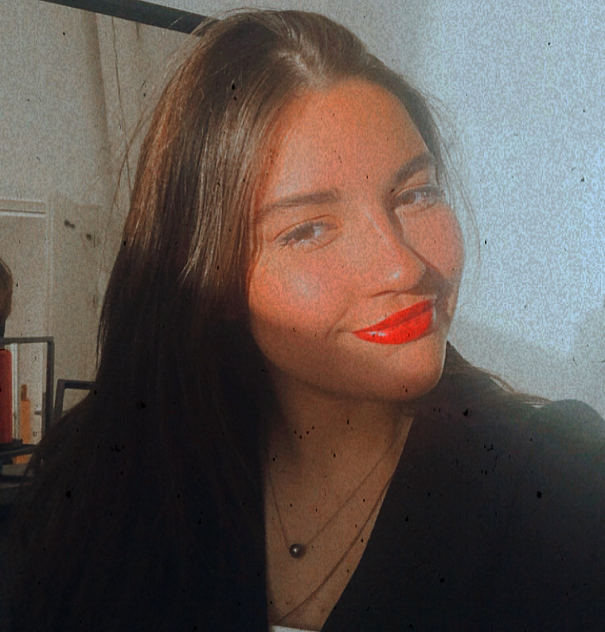

Hello, I'm Camille ! 🤗
I love traveling around the world. 🛩 🌠I created this page to tell you about myself, my passions and to be able to share with you.🌠If you'are interested in my travels around the world, please don't hesitate to click on the link below. With this one, we can share our experience all together.
Discover my website: WonderlandMyself
I am a dynamic, smiling woman. I like to share my experience. I have create this page to speak more about me and another page to share my experiences abroad with you.
Travel 🛩
I have spent time in a lot of different places. Recently it was in Australia. I have already visit a lot of places and expect to see many more throughtout my life.
My passions
I love to cook, especially baking. Since I am a little girl, I have always cooked with my family. When the weather was terrible, we prepared good dishes all together. These are very good memories. That's probably the reason why I love cooking so much.